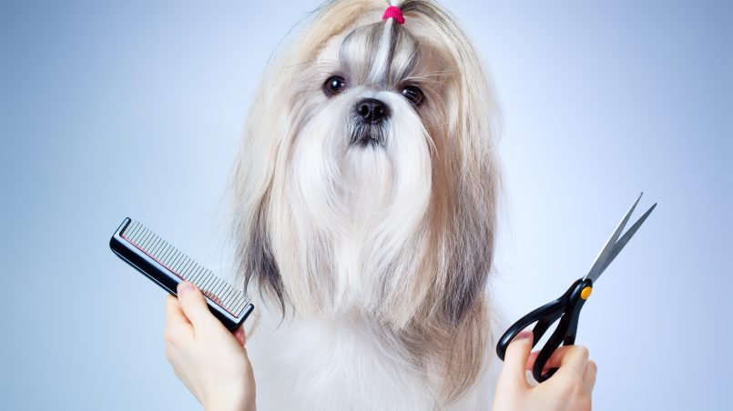

La importancia de la peluqueria canina
La peluqueria canina ha comenzado a cobrar cada vez más importancia y esto se debe en gran medida a su capacidad para brindarle a las mascotas los cuidados higiénicos y estéticos que se merecen. A continuación vamos a explicar en qué consiste exactamente la peluqueria canina y cuál es su importancia

Beneficios de la peluqueria canina
En primer lugar podemos decir que la peluqueria canina es importante porque se encarga de cuidar y mantener la salud, la higiene y la apariencia de nuestras mascotas. Estos tres aspectos ya son suficientes para no dudar al momento de llevar a nuestras mascotas a la peluquería.
La peluqueria canina también es importante porque además del corte de pelo, se intenta cuidar el manto de acuerdo a las características particulares de cada raza. Además, una vez que el perro está en la peluqueria se lo suele someter a una revisión completa con la cual se puede detectar a tiempo cualquier tipo de anormalidades o infecciones.